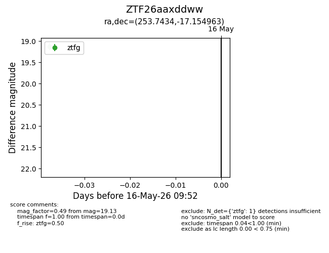
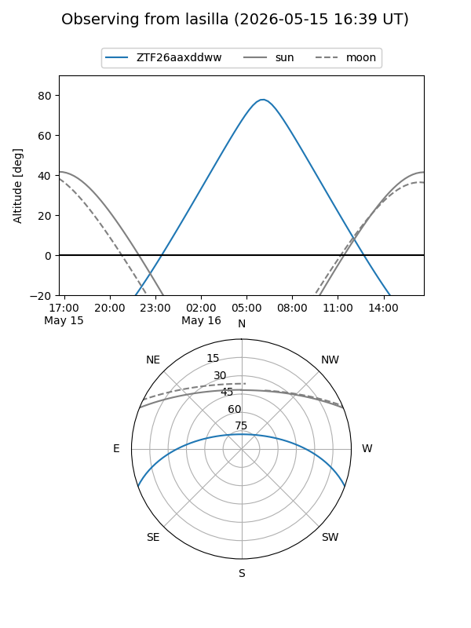
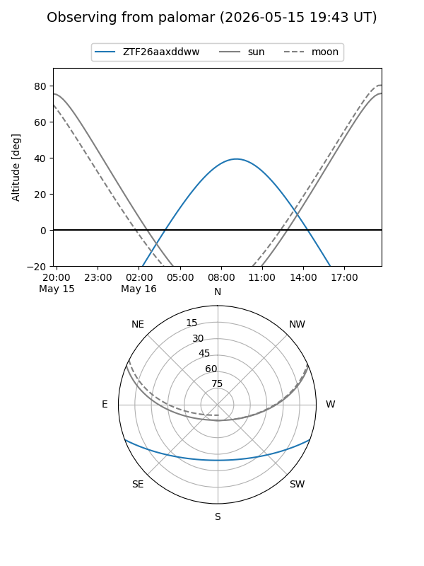

ZTF26aaxddww
Target ZTF26aaxddww at 2026-05-16 09:54
Aliases and brokers:
FINK: link
Lasair: link
ALeRCE: link
alt names
ZTF26aaxddww (ztf,fink_ztf)
Coordinates:
equatorial (ra, dec) = 253.7434,-17.15496
equatorial (HMS+DMS) = 16:54:58.42,-17:09:17.87
galactic (l, b) = (3.3166,+16.21777)
Flags:
Photometry:
last ztfg=19.13
1 ztfg detections
Lightcurve

Visibility


Additional plots